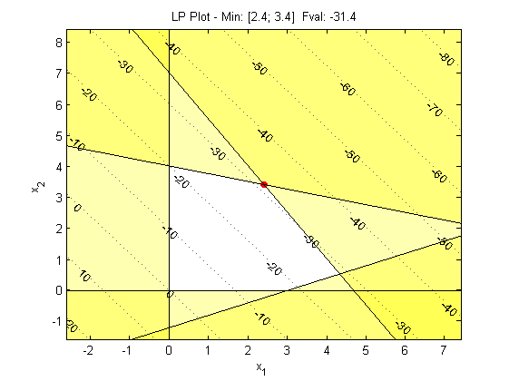
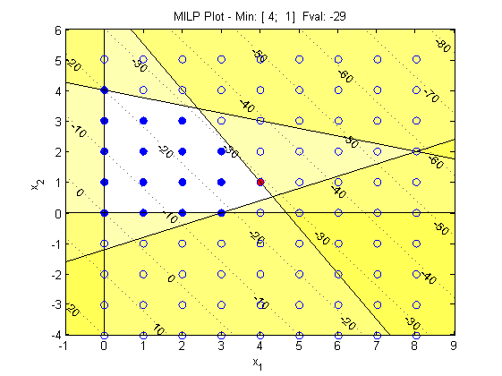

plot
Plot the optimization problem contours & constraints
Syntax
plot(optiObj)
plot(optiObj,scale)
plot(optiObj,scale,log)
Description
plot(optiObj) plots the objective function contours and linear constraints centred around the solution. If the OPTI object has been solved previously, it will use the last solution, otherwise it will attempt to solve from the initial guess within the object. This function only works for two dimensional problems.
plot(optiObj,scale) plots using a user defined zoom level. The default is 5 (±5 in each direction from the solution).
plot(obtiObj,scale,log) plots the objective function contours as log(obj) when log = 1.
Example Plots

Copyright © 2011-2013 Jonathan Currie (I2C2)